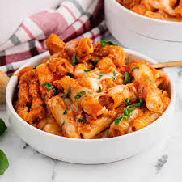

Baked Ziti

Do you like lasagna, but not the fuss? Make baked ziti instead!
It's a lot like a classic lasagna casserole, but easier to make and without
lots of layers or broken noodles. It makes for a perfect midweek or weekend
meal, or a hot dish to bring to a potluck. Make extra and freeze for later.
Ingredients
- 1 pound ziti/penne/rotini pasta
- 1 tablespoon extra virgin olive oil
- 1 pound Italian sausage
- 1 large onion, chopped
- 3 to 4 cloves garlic, chopped
- 1 tablespoon minced fresh rosemary or basi
- 1 tablespoon Italian seasoning
- 1/2 teaspoon red pepper flakes
- 4 cups jarred marinara or pasta sauce
- 8 ounces mozzarella cheese, shredded
- 1 cup grated Parmesan or pecorino cheese
- 1 heaping cup ricotta cheese
Steps
- Preheat the oven to 350°F.
- Cook the pasta: Drain the pasta through a colander. Toss with a
little olive oil so the pasta does not stick together while you
make the sauce.
- Brown the meat: If you are using ground beef or pork instead of
sausage, sprinkle with a little salt.
- Make the sauce: When the meat is mostly browned, add the onions
and stir well to combine. Sauté everything until the onions are
translucent and beginning to brown, about 4 to 5 minutes.
Add the garlic, rosemary or basil, Italian seasoning, and red
pepper flakes and stir to combine. Cook 1 minute, then add the
tomato sauce and stir well. Bring to a simmer.
- Assemble the casserole: Spread a thin layer of the sauce in the
bottom of a 9x13-inch casserole pan, then dot the surface with
half the ricotta cheese. Ladle a spoonful of sauce into the pasta,
stir it well and then add the pasta into the casserole. Pour the
rest of the sauce over the pasta, dot the remaining ricotta cheese
over the pasta, and sprinkle on top both the mozzarella and the
Parmesan cheese.
- Bake: Bake uncovered in the oven at 350°F until the top is lightly
browned and the cheese melted, about 20 to 25 minutes. Let stand
for 10 minutes before serving.